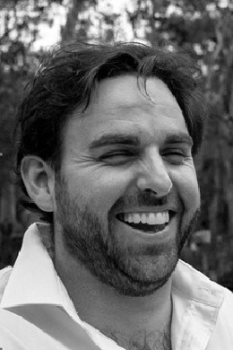

The Southern Ocean Carbon Company (SOCC) is a purpose driven company, cultivating seaweed in marine leases around the coast of Tasmania. The team aims to scale rapidly in order to sequester carbon dioxide from the atmosphere and reduce the impacts of climate change.
In this edited conversation, Peter Green spoke with Adam Brancher and Dr Tomas Remenyi, two of the four co-founders, about the origin story of SOCC and their plans for the future.
Adam Brancher is Managing Director and holds a strong military, marine and commercial background, most prominently as MD of Kedge Pty Ltd. Dr Tomas Remenyi is Director of Science and and expert in climate change processes, chemical oceanography and climatology.
How has The Southern Ocean Carbon Company evolved to where it is now?
Tomas: As a climate researcher and oceanographic biogeochemist by training, I became tired of telling people about the problem of climate change and decided to start working towards a solution. After watching the documentary 2040, where Dr. Brian von Herzen spoke about seaweed's potential in solving climate change, I decided that I wanted to get involved. As a result, we're now working with Dr Brian and his organisation. At the same time, Adam and Prue discovered that offsetting the carbon for their business was extremely hard and decided to try and do it themselves. Ultimately, when my wife, Carolyn, and I met with with Adam and Prue, we realised that we made a really strong team together with complementary skills and values.
Adam: We both believe that the solution for climate change ultimately lies in corporate activity. As a result, we came together, put a load of rope in the water and started to work out how to realise the potential of seaweed. There's some cool stuff about to happen for us and we will be working with Dr Brian von Herzen's organisation, and a major aquaculture company here in Tasmania to continue the journey.

Are you still mainly focussing on producing Biochar from your seaweed? Why is that?
Adam: Ultimately, we are trying to sequester the carbon that we capture. Producing Biochar is a very effective way of doing it, because we can measure that aspect easily. However, we are not discounting developing other product areas if their production results in a net benefit.
Tomas: Biochar's great because it locks the carbon up, preventing CO2 from being released back into the atmosphere. In addition, all the other trace nutrients in seaweed Biochar are very useful for the soil. Furthermore, once the carbon's in the soil, it actually aggregates other nutrients to it, and becomes a catalyst. That means that the quality of the nutrients available in the soil dramatically increases when the carbon is there. We can increase the productivity of particularly degraded areas. In Tasmania, there are plenty of degraded plots of land that have been mined of carbon over 100 years. This is really important to us. It's a multi benefit system.
What's the process like for finding leased areas in Tasmania for seaweed cultivation?
Adam: Tasmania has a very well developed aquaculture regulatory system. The bulk of the approved aquaculture areas already have seaweed allocations. In general, it's a pretty receptive regulatory space. Eventually, when we're at full production, we need to be in an area where there's plenty of nutrition. That effectively means we need to be in depths of 100 metres. With few exceptions, those aren't in State but Commonwealth waters. A lot of our work with Blue Economy CRC seeks to reconcile all the challenges of regulation in those spaces. Alltogether, leasing area for cultivation is much easier to do here compare to other parts of Australia.
Tomas: We're super interested in engaging with that regulation. This industry needs to be global, and at a huge scale. As a result, we need to build some really good rules relating to running it well. We don't want to create more problems and make the same mistakes like land-based monoculture. One of the things that I've found quite incredible about this space is that everybody's so excited about it. People want to help across the board from regulators and even potential competitors. We're all very much trying to be collaborative at this stage.
What are the some of the main challenges you've encountered operating a young company like SOCC?
Tomas: Firstly, we're trying to sell a product into a market that doesn't exist. The methods which prove that seaweed is a sequestration method haven't been demonstrated, proven or signed-off on by some major governments. That's a really big challenge. Secondly, the speed at which the wheels of bureaucracy turn is slow. That makes getting started in the space quite challenging.
Adam: On a micro level, I'm very grateful that this team has a set of complimentary skillsets that account for the things I find challenging. On a macro level, it requires a significant amount of investment to continue to scale these operations.

What advice might you give to your younger self, or someone starting out on their journey with seaweed projects?
Adam: Genuinely, just do it. The only way we're going to tackle this is by doing things. Climate change is a wicked problem and it requires a holistic solution. So whether it's seaweed or something else, go and do something positive.
Tomas: A very wise person once told me that you have to be an expert in something. Then you have to figure out how to use it.
What books might you recommend to someone who's trying to build ventures in this space?
Adam: "Eat Like a Fish" by Bren Smith.
Tomas: Read something by Michael Mann who has been a leader in this space for 40 years. His most recent book's amazing.